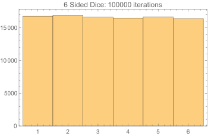
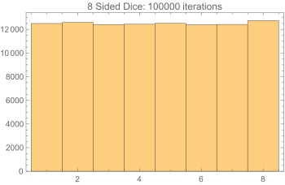

How does one create a fair 8 dice from a fair 6 dice?
The following are the histograms of the simulated fair 6-sided dice and a fair 8-sided dice generated using the 6 sided dice. The simulation shows that the distribution is uniform. This page provides you two different languages to simulate the data - Wolfram Mathematica and Python. Feel free to copy the code and run it on your computer.
 
Module[
{fairEightTree, fairSix := Ceiling[Divide[RandomInteger[{1, 6}], 3]]},
fairEightTree = <|1 -> <|1 -> <|1 ->1, 2 -> 2|>, 2 -> <|1 -> 3, 2 -> 4|>|>,
2 -> <|1 -> <|1 -> 5, 2 -> 6|>, 2 -> <|1 -> 7, 2 -> 8|>|>|>;
Histogram[Table[fairEightTree[fairSix][fairSix][fairSix], 100000]]]
import random
import math
def binaryFromSix():
return math.ceil(random.randint(1, 6) / 3)
fairEight = { 1: {1: {1: 1, 2: 2}, 2: {1: 3, 2: 4}}, 2: {1: {1: 5, 2: 6}, 2: {1: 7, 2: 8}} }
if __name__ == '__main__':
for i in range(100):
print(fairEight[binaryFromSix()][binaryFromSix()][binaryFromSix()], end=' ')